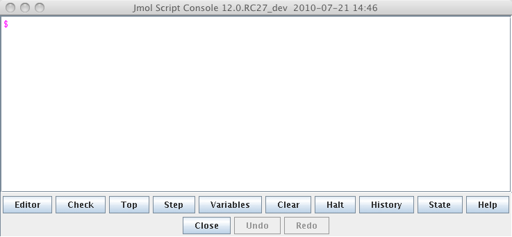
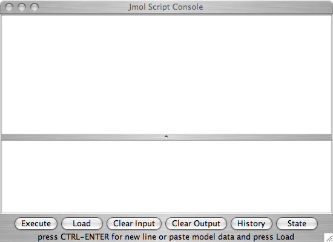

Once the molecule file is fully loaded the image at right will become live. At that time the "activate 3-D" icon
 will disappear.
will disappear.
Using Commands in the Script
Window
The display at right is from the file ethane-staggered-3-21G.log.
To follow along you can use the applet at right or download
the
file and open it in a copy of the Jmol application. If you are using the applet at right you can return to this view by clicking the button below.
- Open
the script window. In the application use the
pull-down menu
(File > Script...) or in both the application and the applet use
the
pop-up menu (right mouse button, control click on one button mouse,
> Console). In the application a window
will open that
looks like figure 1 and in the applet the window will look like figure
2.

Figure 1: The script window as it appears in the Jmol application. Click here to enlarge the image.
Figure 2: The script window as it appears in the Jmol applet. The colors are a little different in the pure javascript (JSmol) version. Click here to enlarge the image. - Using commands. The script console is Jmol's command line interface. In the application version type your command after the "$" prompt. The command will appear red until you have typed a complete command. In the applet type the command in the bottom part of the window. There is no syntax checking in the applet. Hit the <return> key to activate the command. Try some of these commonly useful commands:
- "spin on" will cause the molecule to start spinning.
- "spin off" will stop the molecule from spinning.
- "moveto 0 {0 0 0} 0" will return to the default view.
- "select carbon" will select the carbon atoms in the file.
- "select hydrogen" will select the hydrogen atoms in the file.
- "select all" will select all atoms in the file.
- "select none" will deselect all the atoms.
- "color green" will color all the selected atoms green. NOTE: you will see nothing if you do not select some atoms first. You can pick other colors as well (blue, red, orange, violet, pink, purple, cyan, magenta, indigo, yellow, gray, white, black).
- "measure allconnected (*)(*)" will display the bond lengths for all the bonds in the molecule.
- "set echo top left; echo "myText"" displays the text "myText" at the top left of the window. Position options are: top left, top center, top right, middle left, middle center, middle right, bottom left, bottom center, bottom right.
- "echo """ will turn off which ever echo was last set.
- "select all; label on" will label all the atoms with their atomic symbols and atom number.
- "select hydrogen; label off" will turn off just the hydrogen labels made in the previous step.
- "mo #" where # is an integer corresponding to the index of a molecular orbital will display that molecular orbtial. The last frame of the example file contains mo's #1-19, try some.
- "mo color green yellow" colors the lobes green and yellow instead of the default.
- "mo delete" gets rid of the mo.
- "isosurface mySurface solvent" displays the "molecular" surface. This surface is defined as the surface formed by rolling a spherical solvent "probe" around the molecule at the distance of the van der Waals radii of the atoms. By default the spherical probe is assumed to have a radius of 1.2 Å. You will see nothing if you do not select any atoms.
- "isosurface mySurface delete" will delete the surface named mySurface that was created above.
- "isosurface mySurface off" will turn the isosurface off without deleting it.
- "isosurface mySurface on" will turn the isosurface back on.
- "isosurface list" will list the isosurfaces you have available.
- There are many more commands and the ones above have additional options.
- Adding your own text is a more extensive tutorial on using the echo and label commands.
- Detailed documentation on all commands may be found at Bob
Hanson's Jmol Interactive Scripting Documentation site
 .
.
Page skeleton and JavaScript generated by export to web function using Jmol 14.1.7 2014-01-22 20:25: on Jan 25, 2014.
This will be the viewer

If your browser/OS combination is Java capable you will get snappier performance if you
use Java.